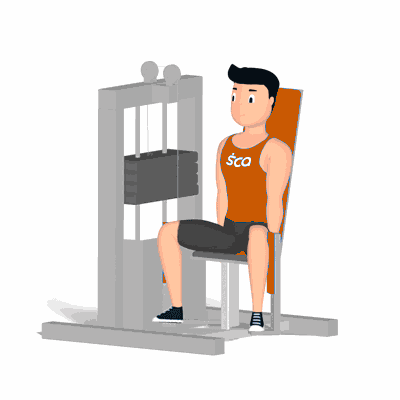

Banco Abdutor

Exercício para fortalecimento e hipertrofia dos músculos do glúteo, com enfoque no glúteo médio e glúteo mínimo.
Ficha Técnica
Tipo: Musculação
Grupo Muscular: Glúteo
Aparelho: Nenhum
Músculos: Nenhum
Como realizar
- Sente sobre banco do aparelho Abdutor;
- Costas e glúteos bem apoiados;
- Posicione os pés no suporte da máquina e joelhos apoiados no encosto externo lateral;
- Concentre a força nos músculos trabalhados adutores;
- Empurre o suporte lateralmente com os joelhos de forma simultânea;
- Realize a abertura o máximo que conseguir;
- Manter a contração máxima dos músculos por um instante;
- Retorne à posição inicial de forma controla, repita os movimentos.
 RC STORE
RC STORE